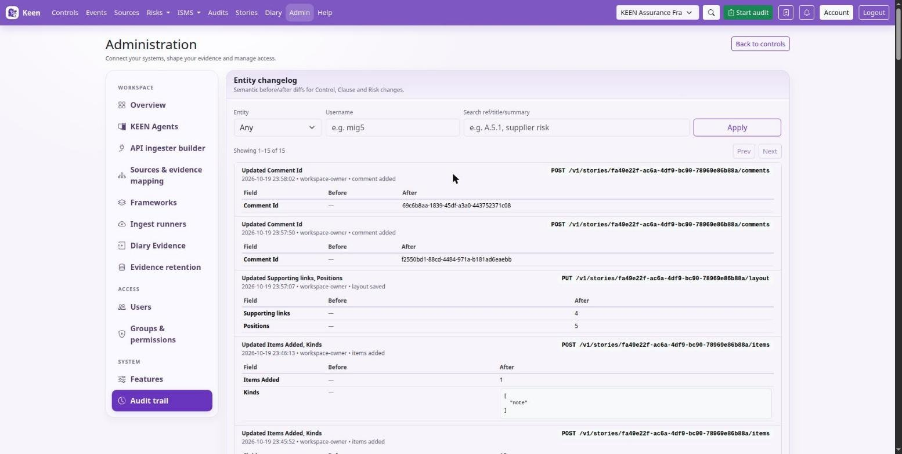

Administering KEEN
Audit trail and change history
Chapter 29 of 30
Review the administrative Audit trail
Admin → Audit trail answers two questions: what changed, and what requests surrounded that change. Access requires the Audit trail permission or administrator access.
Entity changelog: understand what changed
The Entity changelog shows semantic changes to controls, clauses and risks, with the recorded author, time and before/after field differences. Filter by entity type, username or reference, title or summary, choose Apply, and use Prev and Next to move through results.


Request audit trail: investigate surrounding activity
The Request audit trail shows request timestamps, usernames, HTTP methods, paths and query strings, response status, duration in milliseconds, client IP addresses and user agents. Filter by username, part of the path or method, then choose Apply; pagination reaches earlier records.
Going deeper: reading methods and status codes
GET usually retrieves information; POST, PUT, PATCH and DELETE commonly submit changes. A 2xx status is a successful response, a 4xx status a rejected or invalid request, and a 5xx status a server-side failure. One UI operation may generate several requests, and a successful response may acknowledge a background job that continues separately.
Use the records in context
For an unexpected risk edit, find the risk in the Entity changelog, inspect the field differences, then filter the Request audit trail by the recorded user and relevant path. Client IP interpretation depends on the installation’s trusted-proxy configuration, and user-agent values are supplied by the client.
These views cover recorded application activity and supported entity changes; browser-only interactions and direct database changes can fall outside that history, so use deployment logs and backups alongside it when investigating an incident. Treat usernames, addresses and request metadata as sensitive when sharing investigation material. For planning an assurance review and selecting evidence samples, use the Audits workflow.